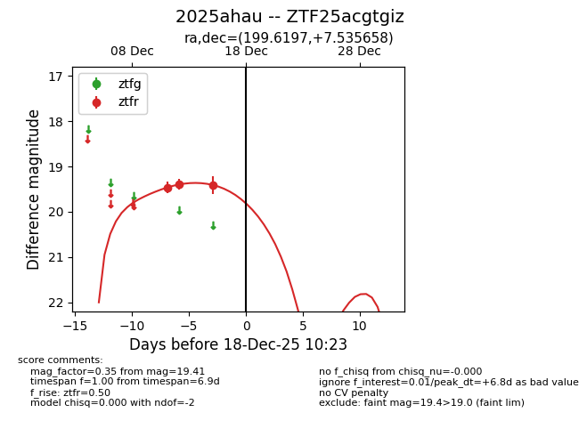
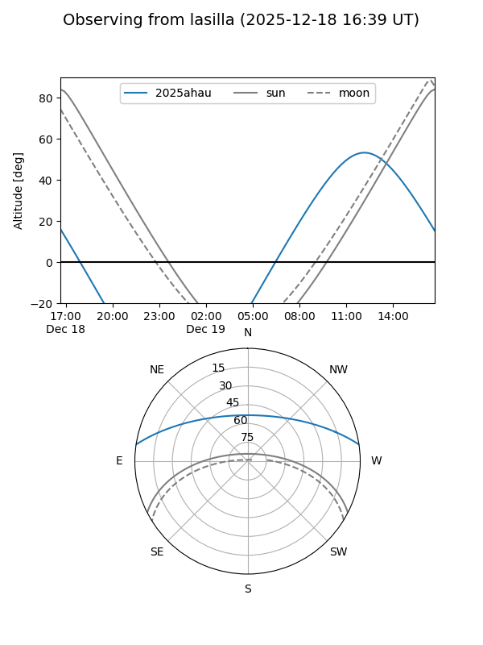
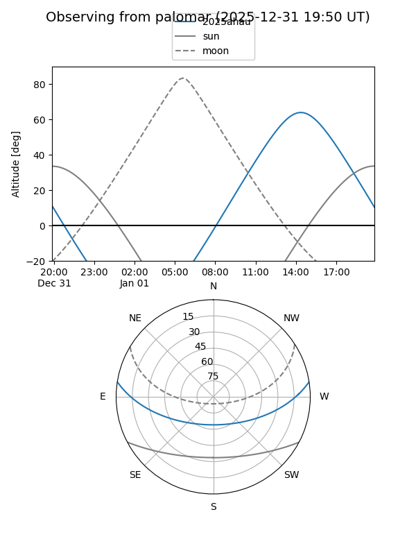
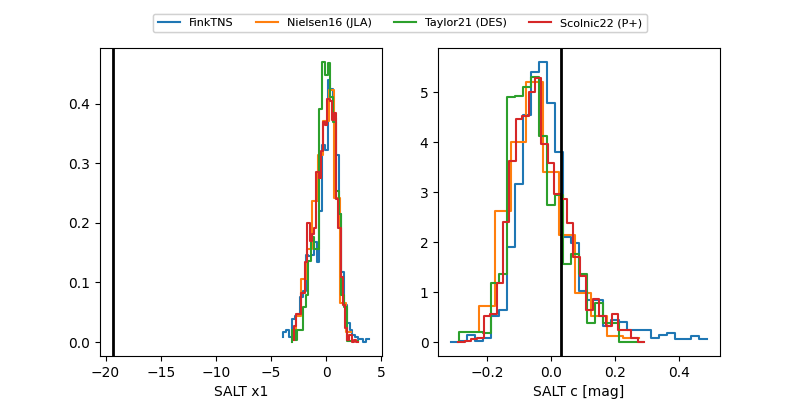

2025ahau
Target 2025ahau at 2025-12-31 18:00
Aliases and brokers:
FINK: link
Lasair: link
ALeRCE: link
TNS: link
YSE: link
alt names
ZTF25acgtgiz (ztf,fink_ztf)
2025ahau (tns,yse)
Coordinates:
equatorial (ra, dec) = 199.6197,+7.53566
equatorial (HMS+DMS) = 13:18:28.72,+07:32:08.37
galactic (l, b) = (322.2883,+69.38488)
Flags:
Photometry:
last ztfr=19.41
3 ztfr detections
Lightcurve

Visibility


Additional plots
